Ricordi
Serie di foto (purtroppo ne ho poche ma non potevo chiedertele che altrimenti mi sgamavi), con titoli poetici e commenti che non sono da meno
In Palestra
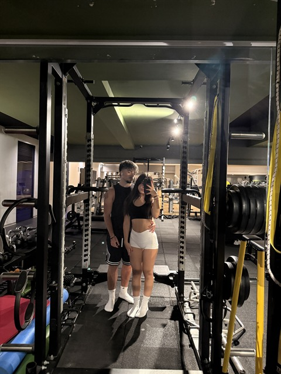
Ci ha fatto conoscere e ci ha unito
Prima volta con i tuoi
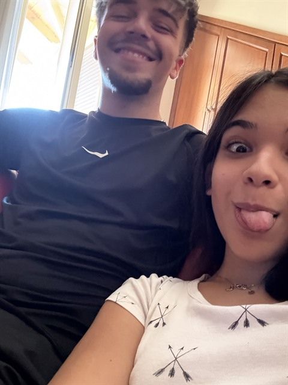
Stavo morendo di ansia, però ero felicissimo ed è stato troppo bello
Rainbow Magicland
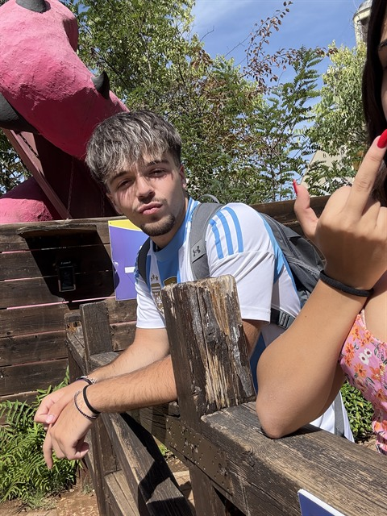
Giornata organizzata totalmente a cazzo. Mi sono divertito un mondo. Sono ancora offeso per le prese per il culo
Sessione di studio a casa mia
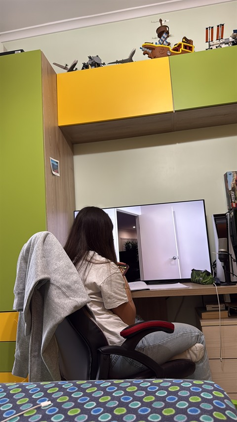
Qui è entrata la scuola di mezzo, ma non è riuscita a non farci stare insieme
Vodka alla pesca
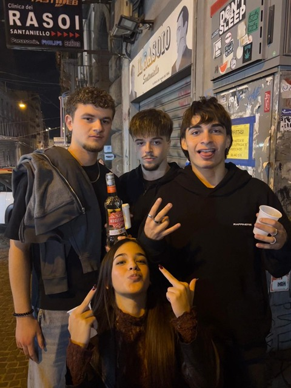
Non c'è bisogno di commentare
18esimo di Giosu
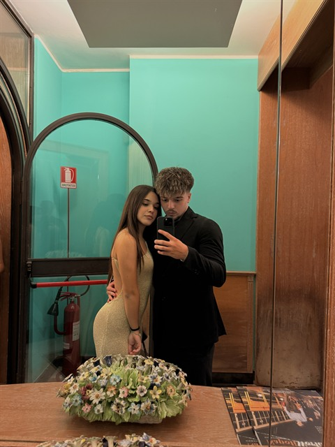
Eri bellissima quella sera e questa foto mi rende troppo felice ogni volta che la guardo.
In pale pt.2
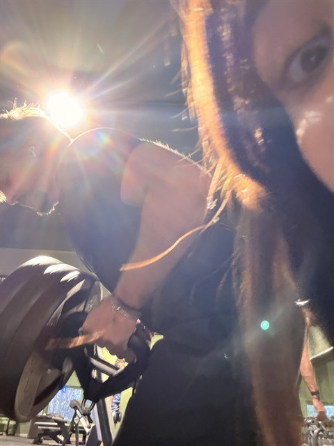
Penso l'ultimo allenamento serio insieme
Compleanno di Ale
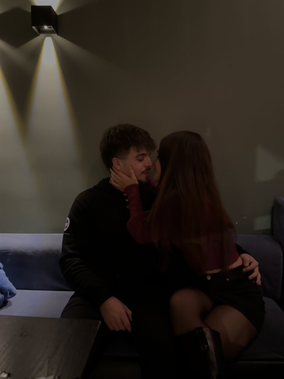
Nonostante il periodo di merda che stavamo passando siamo comunque rimasti uniti
La donna più bella di questo mondo
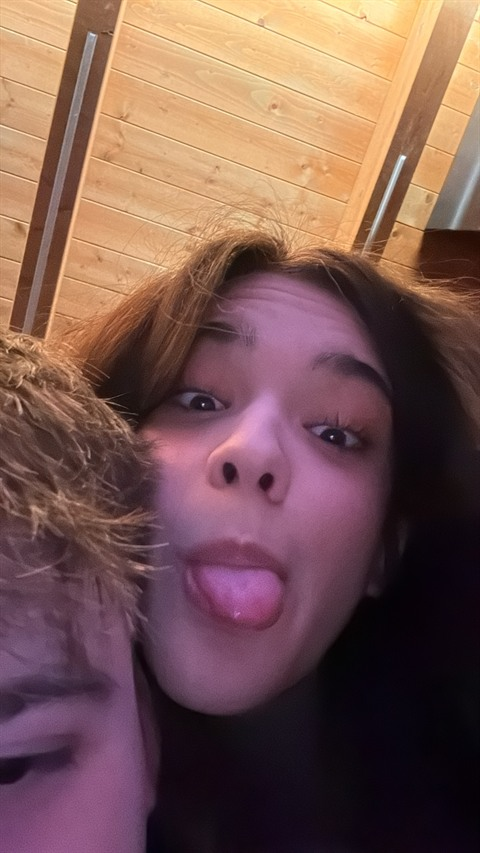
Nonostante tu sia disaccordo, ripeterò sempre che questa foto sia la mia preferita. Sei bellissima
Le due donne della mia vita
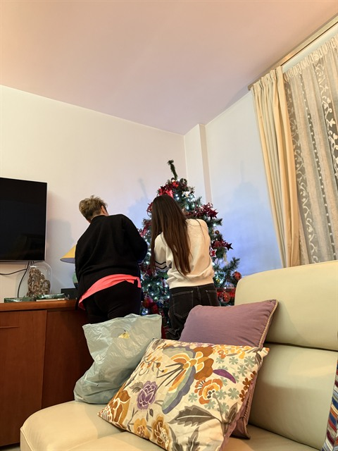
Non saprei che titolo dargli
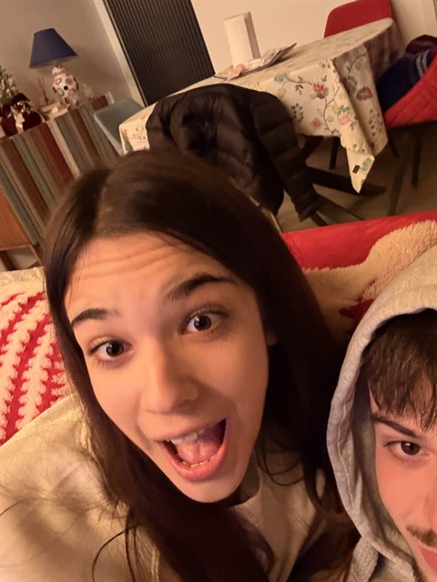
Che commento metto? Bella domanda
Al mio 18esimo
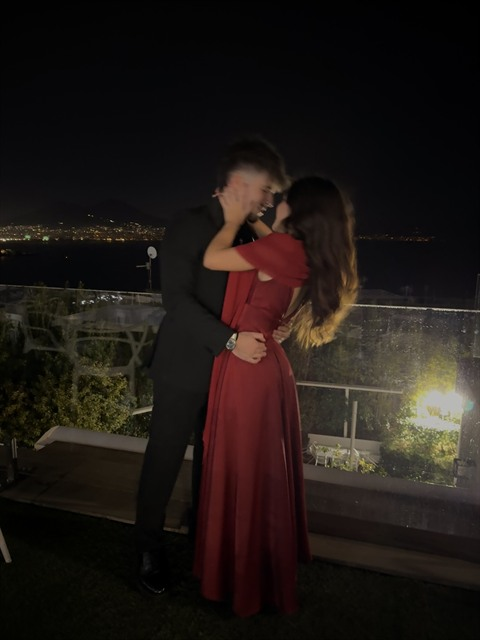
Una delle cose più belle di sempre quella di poter condividere un momento così tanto importante della mia vita con te, che sei la cosa più bella che mi sia mai capitata.
Letterone
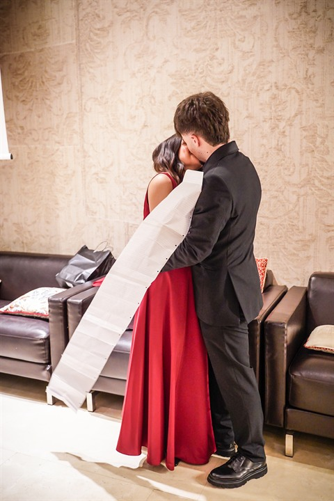
Penso una delle sorprese più belle di sempre quella della scatola, con il bracciale, l'orsacchiotto e la lettera. Ancora oggi la rileggo di tanto in tanto quando sono giù.
Cappello
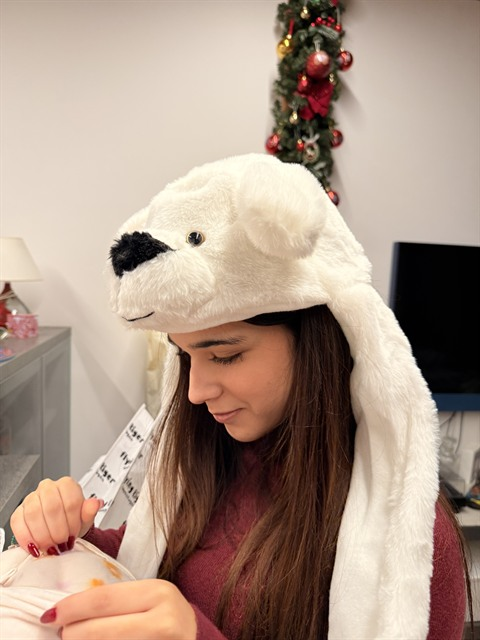
Anche qui sei bellissima, ma effettivamente lo sei sempre.
Studio matto e disperato
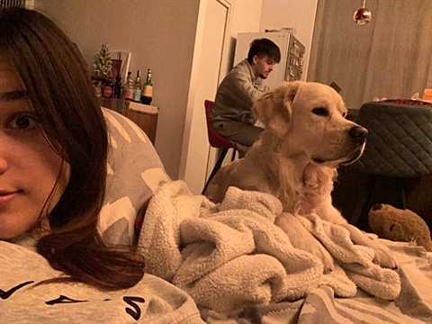
Pomeriggio bello ricco che si conclude con una sessione di studio di informatica.